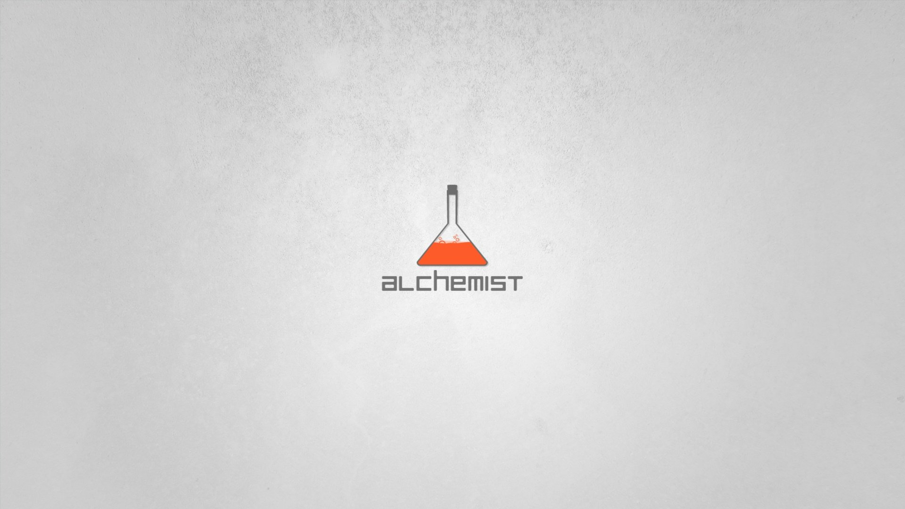

{% extends 'base.html' %}
{% block head_script %}
 <link rel="stylesheet" href="../static/lun/css/shutter.css">
     <link rel="stylesheet" href="../static/index.css">
    <script src="http://cdn.hcharts.cn/highcharts/highcharts.js"></script>
    <script src="../static/lun/js/velocity.js"></script>
    <script src="../static/lun/js/shutter.js"></script>
{% endblock %}
{% block nav_index %}active{% endblock %}
{% block index %}

<div class="container">
        <div class="row">
            <div class="col-sm-3 col-lg-2">
                <div class="panel panel-default">
                    <div class="panel-heading">
                         <h3 class="panel-title">介绍</h3>
                    </div>
                    <div class="panel-body">
                       <p style="border-bottom: 1px solid #c0c0c0;font-size:16px ">项目:数据采集系统</p>
                       <p style="border-bottom: 1px solid #c0c0c0;font-size:16px">项目组长:刘宏伟</p>
                       <p style="border-bottom: 1px solid #c0c0c0;font-size:16px">项目组成员: 丰晋峰</p>
                       <p style="border-bottom: 1px solid #c0c0c0; "><span style="margin-left: 80px;color:#000; font-size:16px">李泽军</span> </p>
                       <p style="border-bottom: 1px solid #c0c0c0; "> <span style="margin-left: 80px ;color:#000; font-size:16px">梁腾飞</span></p>
                       <p style="border-bottom: 1px solid #c0c0c0; "><span style="margin-left: 80px; color:#000; font-size:16px">刘世奇</span> </p>
                    </div>
                </div>
            </div>
            <div class="col-sm-9 col-lg-10">
                <div class="Carousel">
                    <div class="shutter">
                    <div class="shutter-img">
                      <a href="http://www.bootcss.com/" data-shutter-title="Bootstrap"></a>
                      <a href="http://flask.pocoo.org/" data-shutter-title="flask"></a>
                      <a href="https://scrapy.org/" data-shutter-title="scrapy"></a>
                      <a href="https://www.python.org" data-shutter-title="python"></a>
                    </div>
                    <ul class="shutter-btn">
                      <li class="prev"></li>
                      <li class="next"></li>
                    </ul>
                    <div class="shutter-desc">
                      <p>python</p>
                    </div>
                </div>

                    <script>
                    $(function () {
                      $('.shutter').shutter({
                        shutterW: 950, // 容器宽度
                        shutterH: 450, // 容器高度
                        isAutoPlay: true, // 是否自动播放
                        playInterval: 3000, // 自动播放时间
                        curDisplay: 3, // 当前显示页
                        fullPage: false // 是否全屏展示
                      });
                    });
                    </script>


                </div>

            </div>
        </div>
</div>
{% endblock %}